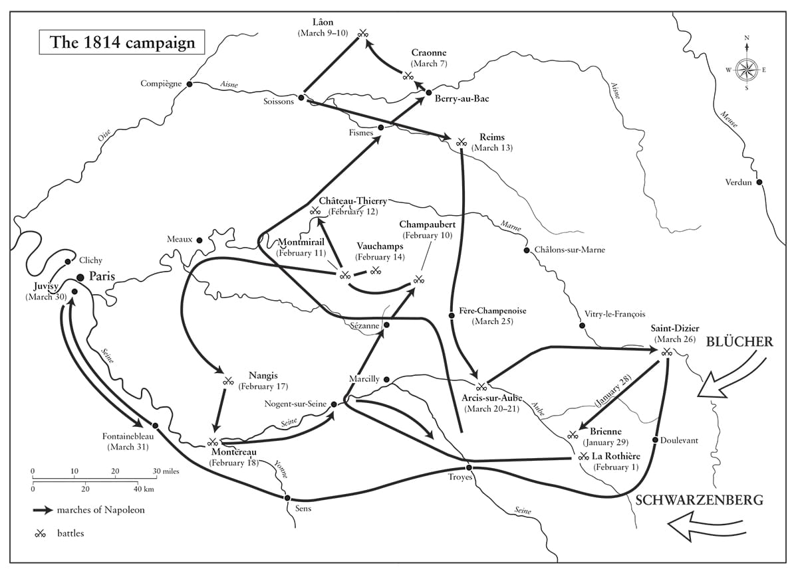

Khi một đạo quân yếu thế hơn về quân số, yếu thế hơn về kỵ binh và pháo binh, điều cốt yếu là phải tránh một cuộc giao chiến tổng lực.
• Tôn chỉ quân sự số 10 của Napoleon
Rome chính là thứ Pompey cần giữ; đáng lẽ ông ta nên tập trung mọi lực lượng của mình ở đó.
• Napoleon, Caesar’s Wars
(Các cuộc chiến tranh của Caesar)
⚝ ✽ ⚝
Trong những lần trước đó, khi Pháp có nguy cơ bị xâm lược – vào các năm 1709, 1712, 1792-1793, và 1799 – quân đội đông đảo và các pháo đài biên giới lớn của nước này được kỹ sư quân sự Sébastien de Vauban xây dựng vào thế kỷ 17 đã bảo vệ nó. Lần này thì khác. Quy mô lực lượng Đồng minh cho phép họ đánh tạt sườn phòng tuyến pháo đài đáng gờm phía đông bắc – như Verdun, Metz, Thionville, Mézières – và vây hãm chúng. Hơn nữa, cho mục đích này họ có thể sử dụng lực lượng lính loại hai của mình, như Landwehr, dân binh và binh lính thuộc các tiểu quốc Đức. Vào giai đoạn 1792-1793, các đạo quân Áo và Phổ tấn công Pháp chỉ có 80.000 quân, nhưng phải đối đầu với 220.000 người Pháp vũ trang. Vào tháng Một năm 1814, Napoleon đối mặt với tổng cộng 957.000 quân Đồng minh trên chiến trường với chưa tới 220.000 người – trong đó 60.000 dưới quyền Soult và 37.000 dưới quyền Suchet đang chiến đấu với đạo quân Anh-Tây Ban Nha-Bồ Đào Nha của Wellington ở Tây nam Pháp, và 50.000 dưới quyền Eugène đang bảo vệ Italy. Trong chiến dịch sắp tới, đạo quân của Napoleon hiếm khi được 70.000 người và luôn yếu về pháo binh và kỵ binh một cách nguy hiểm.
Nhiều người trong số đó là lính mới gọi quân dịch, không có gì hơn ngoài một chiếc áo khoác và một cái mũ lính thời bình để thể hiện họ là lính. Thế nhưng họ đã trung thành với màu cờ sắc áo; chỉ 1% trong 50.000 lính quân dịch trẻ trải qua trung tâm huấn luyện chính tại Courbevoie đào ngũ trong chiến dịch 1814. Thường bị mô tả như một con quỷ ăn thịt người ra sức chống đỡ cho sự cai trị của mình bằng cách ném trẻ con vào lò sát sinh của chiến tranh, điều mà trên thực tế Napoleon không hề muốn. “Điều cần thiết là ta có được những người đàn ông, không phải những đứa trẻ”, ông viết cho Clarke ngày 25 tháng Mười năm 1813. “Không ai dũng cảm hơn thanh niên của chúng ta, nhưng… cần phải có những người đàn ông để bảo vệ nước Pháp”. Vào tháng Sáu năm 1807, ông đã nói với thống chế Kellermann rằng “Những đứa trẻ 18 tuổi là quá trẻ để tham gia chiến tranh ở những nơi xa xôi.”
•••
Cho dù Napoleon tìm cách khôi phục lại tinh thần ái quốc năm 1793, thậm chí cho phép các nhạc công đường phố chơi bản nhạc cộng hòa “Marseillaise” mà trước đó ông đã cấm, nhưng lời hiệu triệu cách mạng cũ “Tổ quốc đang lâm nguy!” không còn phát huy tác dụng kích thích mạnh mẽ của nó nữa. Dẫu vậy, ông vẫn hy vọng quân đội và năng lực của mình có thể đủ để chiến thắng. “60.000 người và ta”, ông nói, “cộng lại sẽ là 100.000 người”.(*) Tuy nhiên, nếu người Pháp được thúc đẩy mạnh mẽ như Napoleon đã hy vọng, một phong trào du kích hẳn đã bùng lên tại Pháp khi Đồng minh xâm lược, song không hề có gì xuất hiện. “Quan điểm của công chúng là một thứ sức mạnh vô hình, bí ẩn, không thể cưỡng lại”, Napoleon sau này triết lý. “Không có gì linh động hơn, không có gì mơ hồ hơn, không có gì mạnh mẽ hơn. Cho dù nó thất thường, dẫu vậy nó lại chân thành, hợp lý, và thường xuyên đúng đắn hơn nhiều điều người ta có thể nghĩ tới.”
Napoleon đã gìn giữ các tiến bộ chính trị và xã hội của Cách mạng chủ yếu thông qua việc ngăn nhà Bourbon trở lại nắm quyền trong 15 năm, sau khi 10 năm trước đó đã trôi qua kể từ khi Cách mạng nổ ra tới đảo chính Brumaire, đồng nghĩa với việc một thế hệ đã trôi qua kể từ khi ngục Bastille thất thủ, và người Pháp đã trở nên quen thuộc với tự do và thể chế mới có được của họ. Nhưng với nhiều người, những lợi ích này đã bị che khuất bởi cái giá họ phải trả bằng máu và tiền bạc cho một chuỗi những cuộc chiến tranh mà sáu Liên minh chính thống kế tiếp nhau đã tuyên bố chống lại Pháp thời Cách mạng và Napoleon. Sau 22 năm chiến tranh, người dân Pháp khao khát hòa bình, và sẵn sàng cam chịu sự nhục nhã của việc xuất hiện những đống lửa trại Cossack trong rừng Boulogne để có được nó. Napoleon sớm phát hiện ra rằng ông thậm chí không thể trông cậy vào các tỉnh trưởng của mình, chỉ có hai người trong số họ – Adrien de Lezay-Marnésia ở Strasbourg và De Bry ở Besançon – là tuân lệnh ông về việc lánh nạn ở thủ phủ của tỉnh và chống lại cuộc xâm lược. Những người khác hoặc “hưu chiến” – nghĩa là bỏ chạy vào nội địa ngay khi có tin về một cuộc đụng độ nhỏ đầu tiên – hoặc, như Himbert de Flegny ở Vosges, đơn giản là đầu hàng. Một số, như Louis de Girardin ở Hạ Seine, thì kéo cờ hoa huệ.(*) Một số tỉnh trưởng đã hồi sinh tinh thần ủng hộ Bonaparte của họ khi Napoleon từ Elba trở về, chỉ để rồi lại hồi sinh lần nữa tinh thần bảo hoàng của họ sau trận Waterloo. Claude de Jessaint, tỉnh trưởng Marne, đã phục vụ mọi chính thể không gián đoạn và không bị kêu ca từ năm 1800 đến năm 1838.
Napoleon thất vọng với việc có khá ít người Pháp hưởng ứng lời kêu gọi cầm vũ khí vào năm 1814 – khoảng 120.000 người từ tổng số gọi quân dịch mà trên danh nghĩa thì nhiều hơn thế vài lần – nhưng ông cũng chẳng có đủ quân phục và súng hỏa mai để trang bị cho những người thực sự tới các trung tâm huấn luyện. Những lần gọi quân dịch của mấy năm vừa qua đã làm mất lòng giới phú nông, những người ủng hộ chủ chốt của ông, và đã xảy ra những cuộc bạo động chống quân dịch dữ dội. Dưới thời Đế chế, tổng cộng có 2.432.335 người bị gọi quân dịch trong 15 sắc lệnh, 18 quyết định và một lệnh của Hội đồng, được ban hành từ tháng Ba năm 1804 đến tháng Mười một năm 1813. Gần một nửa trong các văn bản này ban hành năm 1813, khi những người tuyển quân tảng lờ độ tuổi tối thiểu và các yêu cầu về chiều cao. (Tiêu chuẩn để được gọi vào Cận vệ Trẻ giờ đây cho phép những người cao 1,57 m, trong khi trước đây phải từ 1,63 m trở lên). Từ năm 1800 tới năm 1813, tỉ lệ trốn quân dịch đã giảm từ 27% xuống 10%, nhưng tới cuối năm 1813 đã tăng lên trên 30%, và đã xảy ra những cuộc bạo động lớn chống quân dịch tại Vaucluse và các tỉnh phía bắc. Tại Hazebrouck, một đám đông hơn 1.200 người đã suýt giết chết viên quận trưởng địa phương, và bốn án tử hình đã được thi hành. Năm 1804, Napoleon đã tiên đoán rằng việc gây mất lòng người của quân dịch và các loại thuế gián thu một ngày nào đó sẽ hủy hoại ông. Như Pelet ghi lại, “dự cảm ấy đã thành hiện thực, vì các từ Không còn quân dịch – không còn thuế gián thu đã trở thành tôn chỉ trên các lá cờ của phong trào Phục hồi năm 1814”. Thuế được mở rộng từ rượu, thuốc lá và muối sang cả vàng, bạc, tem thư và bài để chơi. Người Pháp đóng thuế, nhưng căm ghét nó.
Sau thảm họa tại Nga, Napoleon đã có bốn tháng để tái thiết và tái cung ứng cho quân đội của mình trước khi chiến sự tái diễn; còn giờ đây ông chỉ có sáu tuần. Với sự tự ý thức rằng đó là một trong những khía cạnh thu hút nhất trong tính cách của mình, ông nói vào đầu năm 1814: “Ta không ngại thừa nhận rằng ta đã gây chiến quá nhiều. Ta muốn đảm bảo cho nước Pháp quyền bá chủ thế giới”. Giờ đây đó không phải là điều sắp diễn ra, song ông hy vọng bằng cách giáng những đòn nặng nề, sử dụng các nguồn lực nội tại chống lại bất cứ kẻ địch nào có vẻ gây ra đe dọa lớn hơn tới Paris, ông có thể buộc đối phương phải chấp nhận các cơ sở hòa bình được đưa ra tại Frankfurt và qua đó giữ được ngôi vị của mình. Đồng thời, ông cũng triết lý về thất bại. “Dân chúng sẽ nói sao nếu ta chết?” ông hỏi các triều thần của mình, rồi tiếp tục với một cái nhún vai trước khi họ có thể đưa ra những ý tưởng êm tai dễ nghe: “Họ sẽ nói, ‘Ồ!’”
•••
Một người có mặt trong buổi tiếp tân vào ngày năm mới của Napoleon trong phòng đặt ngai ở Tuileries năm 1814 nhớ lại: “Thái độ ông ấy bình thản và nghiêm trang, song trên trán ông ấy là đám mây báo hiệu một cơn bão đang tới gần”. Ông đã xem xét các điều kiện hòa bình mà Anh đòi hỏi vào cuối năm 1813, song bác bỏ ý tưởng này. “Pháp không có Ostend và Antwerp”, ông nói với Caulaincourt vào ngày 4 tháng Một,
⚝ ✽ ⚝
Ông đã có thể thêm cả những gì Nga giành được ở Balkan và Anh có được ở Tây Ấn vào danh sách. Những lập luận ông đưa ra để tiếp tục chống giữ là “Italy còn nguyên vẹn”, là “Sự cướp bóc của lính Cossack sẽ khiến dân chúng cầm vũ khí và làm tăng gấp đôi lực lượng của chúng ta”, là ông có trong tay đủ binh lính để đánh vài trận. “Dù Vận may từ bỏ ta, nhưng chí ta đã quyết”, ông nói với sự kiên quyết đầy thách thức. “Ta không quan tâm tới ngai vàng. Ta sẽ không làm nhục dân tộc hay bản thân bằng việc chấp nhận những điều kiện nhục nhã”. Ông có thể đón nhận sự phản bội của Bavaria, Baden, Saxony và Württemberg, cũng như của các bộ trưởng như Fouché và Talleyrand – kể cả của Murat và Caroline em gái của chính ông – nhưng của người ủng hộ ông lớn nhất cho tới lúc đó: Vận may, thì không thể. Về lý trí, Napoleon tất nhiên hiểu quá rõ rằng Định mệnh và Vận may không kiểm soát số phận mình, nhưng dẫu vậy những khái niệm này vẫn có một ảnh hưởng với ông trong suốt cuộc đời.
“Viết cho một bộ trưởng sáng suốt như ông, Vương hầu”, Napoleon mở đầu một lá thư đầy tán tụng gửi cho Metternich ngày 16 tháng Một, trong đó ông đề nghị một cuộc ngừng bắn với Áo. “Ông đã cho ta thấy rõ sự tin tưởng cá nhân, bản thân ta cũng rất tin tưởng vào cách nhìn nhận thẳng thắn của ông, và vào những tình cảm cao cả mà ông luôn bày tỏ”. Ông yêu cầu giữ bí mật lá thư. Tất nhiên là không có chuyện đó; Metternich chia sẻ nó với các Đồng minh khác, song trong suốt mùa xuân năm 1814, các đại diện toàn quyền của Napoleon – chủ yếu là Caulaincourt – tiếp tục thảo luận với Đồng minh về khả năng của một hiệp ước hòa bình, với những điều khoản dao động từng ngày theo vận may của các đạo quân. Ngày 21 tháng Một, trong một nỗ lực nhằm giành thiện cảm của công chúng, Giáo hoàng được thả khỏi Fontainebleau và được phép lên đường về Vatican.
Sự phản bội của Murat được đánh dấu vào ngày 11 tháng Một, khi ông ta ký một thỏa thuận với Áo về việc chỉ huy 30.000 quân tấn công Eugène ở Italy để đổi lấy Ancona, Romagna và việc đảm bảo ngai vàng cho ông ta cũng như những người kế vị của mình. “Ông ta không thông minh cho lắm”, Napoleon nói với Savary khi Murat chiếm Rome sau đó hơn một tuần, “nhưng ông ta chỉ có mù mới tưởng tượng ra rằng mình có thể ngồi lại đó một khi ta đã bị lật đổ, hoặc khi… ta đã chiến thắng tất cả những thứ này”. Ông đã đúng; chỉ chưa tới hai năm sau, Murat bị bắn bởi một đội hành quyết người Naples. “Cách hành xử của Vua Naples thật bỉ ổi và không gọi nổi tên cho cách hành xử của Hoàng hậu”, là câu trả lời của Napoleon về hành vi của em gái và em rể ông. “Ta hy vọng có thể sống đủ lâu để báo thù cho ta và cho nước Pháp trước một sự sỉ nhục và vô ơn đáng ghê tởm như vậy”. Ngược lại, Pauline đã gửi cho anh trai một số đồ trang sức của mình để giúp trả lương cho binh lính của ông. Joseph, người tiếp tục tự gọi mình là Vua Tây Ban Nha ngay cả sau khi Napoleon đã cho phép Ferdinand VII trở về nước ngày 24 tháng Ba, ở lại Paris để điều hành Hội đồng Nhiếp chính.
“Ta giao phó Hoàng hậu và Vua La Mã cho sự can đảm của Vệ binh Quốc gia”, Napoleon nói với các sĩ quan của lực lượng này trong một buổi lễ cảm động tại Sảnh Các Thống chế ở Tuileries vào ngày 23 tháng Một. “Ta lên đường với niềm tin, ta sẽ đối mặt cùng kẻ thù, và ta gửi gắm lại cho các vị tất cả những gì ta yêu quý nhất: Hoàng hậu và con trai ta”. Các sĩ quan có mặt đã hô vang “Hoàng hậu muôn năm!” và “Vua La Mã muôn năm!”, Pasquier trông thấy “nước mắt chảy dài trên nhiều khuôn mặt”. Napoleon hiểu giá trị tuyên truyền nơi đứa con trai còn thơ ấu của ông, và ra lệnh thực hiện bức tranh khắc hình cậu bé đang cầu nguyện với dòng chữ: “Con cầu xin Chúa hãy cứu vớt cha con và Pháp”. Ông rất yêu quý cậu bé, người có thể tạo ra những phản ứng thật lạ ở ông; có lần khi cậu bé ngã và hơi bị đau, gây ra một phen hoảng hốt, “Hoàng đế trở nên rất trầm tư rồi nói: ‘Ta từng thấy một quả đạn pháo quét sạch đi nguyên một hàng 20 người.’” Trước tất cả những tuyên bố “tin tưởng” vào chiến thắng, Napoleon đã đốt các giấy tờ cá nhân của mình trong đêm 24, trước khi rời Paris ra mặt trận vào lúc 6 giờ sáng hôm sau. Ông không bao giờ gặp lại vợ hay con trai mình nữa.
•••
Vùng Champagne nằm về phía đông Paris và có các sông Seine, Marne, và Aisne chảy qua, những thung lũng sông này tạo thành các hành lang tự nhiên cho cuộc tiến quân của Đồng minh về thủ đô. Giao chiến sắp diễn ra nơi đây giữa mùa đông khắc nghiệt nhất trong vòng 160 năm ở Tây Âu; ngay cả người Nga cũng kinh ngạc trước mức độ lạnh giá của nó. Mất thân nhiệt, hoại tử vì giá lạnh, viêm phổi, kiệt sức, và cái đói luôn hiện diện. Sốt chấy rận một lần nữa lại là mối bận tâm đặc biệt, nhất là sau trận dịch lớn bùng phát tại doanh trại ở Mainz. “Binh lính của ta! Binh lính của ta! Họ thực sự tưởng rằng ta vẫn còn một đạo quân ư?” Napoleon nói với Cảnh sát trưởng của ông, Pasquier, vào thời điểm này. “Chẳng lẽ họ không nhận ra kỳ thực tất cả những người mà ta đưa về từ Đức đều đã chết vì căn bệnh khủng khiếp đó, như đòn kết liễu cuối cùng sau tất cả những tai họa khác của ta đó sao? Quả là một đạo quân! Ta sẽ rất may mắn nếu sau ba tuần nữa kể từ hôm nay, ta tập hợp được 30.000 đến 40.000 người”. Chín trong số 12 trận đánh của chiến dịch diễn ra trong một diện tích hẹp, một chiều 192 km, một chiều 64 km – bằng nửa kích thước xứ Wales – trên địa hình bằng phẳng được bao phủ trong tuyết, lý tưởng cho kỵ binh, nếu như ông có lực lượng này. Đối mặt với ông là hai đạo quân chủ lực của Đồng minh, Đạo quân Silesia của Blücher và Đạo quân Bohemia của Schwarzenberg, khoảng 350.000 quân. Tổng cộng, Đồng minh đã tung ra gần một triệu quân.(*)
Nếu như vào năm 1812 đạo quân của Napoleon đã trở nên quá lớn tới mức ông buộc phải trông đợi các thống chế của mình phụ trách các vị trí chỉ huy có tính độc lập cao, thì khi đạo quân này co lại chỉ còn 70.000, ông có thể đích thân chỉ huy nó một cách trực tiếp như ông đã làm ở Italy. Berthier và bảy thống chế khác ra trận cùng ông – Ney, Lefebvre, Victor, Marmont, Macdonald, Oudinot, Mortier – và ông có thể dùng họ hệt như ông đã từng dùng trước đó hơn một thập kỷ, khi một số trong họ mới chỉ là tướng hay chỉ huy sư đoàn; mỗi người trong số họ chỉ có 3.000 tới 5.000 quân dưới quyền chỉ huy của mình. (Về phần những người khác, Bernadotte và Murat giờ đây đang chiến đấu chống lại ông, Saint-Cyr đã bị bắt, Jourdan, Augereau và Masséna đang quản lý các quân khu, Soult và Suchet đang ở phía nam, còn Davout vẫn đang chống giữ Hamburg.)
Nắm quyền chỉ huy vỏn vẹn 36.000 quân và 136 khẩu pháo tại Vitry-le-François vào ngày 26 tháng Một, Napoleon lệnh cho Berthier phân phát 300.000 chai sâm banh và rượu mạnh cho quân lính ở đó và nói rằng, “Chúng ta dùng thì tốt hơn là kẻ thù”. Nhận thấy rằng khi Blücher đã tiến lên phía trước, nên Schwarzenberg hơi tách ra khỏi ông ta, ông liền tấn công Đạo quân Silesia tại Brienne vào chiều ngày 29. “Tôi không thể nhận ra Brienne”, ông nói sau này.“Mọi thứ dường như thay đổi; thậm chí khoảng cách có vẻ ngắn lại”. Nơi duy nhất ông nhận ra là cái cây mà dưới đó mình đã ngồi đọc Jerusalem được giải phóng của Tasso. Người dẫn đường cho Napoleon trong trận đánh là chánh xứ địa phương, một trong những người thầy học cũ của ông, ông này cưỡi con ngựa của Roustam, sau đó nó đã bị giết bởi một quả đạn đại bác ở ngay phía sau Napoleon. Đó là một cuộc tập kích bất ngờ vào lâu đài ở Brienne, trong đó Blücher và ban tham mưu của ông ta suýt bị bắt, và lâu đài đã đứng vững bất chấp những cuộc phản kích dữ dội của quân Nga, dẫn đến thắng lợi của Napoleon. “Vì trận đánh bắt đầu một tiếng trước khi màn đêm buông xuống, nên chúng ta đã chiến đấu suốt đêm”, Napoleon viết cho Bộ trưởng Chiến tranh của ông, Clarke. “Nếu ta có những người lính từng trải hơn, hẳn ta đã làm được tốt hơn… nhưng với những người lính ta có, chúng ta nên coi là mình may mắn với những gì đã xảy ra”. Ông đã đi tới tôn trọng đối thủ của mình và nói về Blücher, “Nếu ông ta bị đánh bại, thì khoảnh khắc ngay sau đó ông ta sẽ cho thấy mình lại sẵn sàng giao chiến hơn bao giờ hết”. Trên đường Napoleon quay về bản doanh của mình tại Mézières, một toán Cossack xông tới khá gần, một kẻ đã lao một cây giáo về phía ông nhưng bị Gourgaud bắn chết. “Trời rất tối”, Fain nhớ lại, “và giữa sự hỗn loạn của trại đêm, các toán quân chỉ có thể nhận ra nhau nhờ ánh sáng của các đống lửa trại”. Napoleon thưởng cho Gourgaud thanh kiếm ông đã đeo tại Montenotte, Lodi, và Rivoli.
Khi ông tổng kết tình hình sau trận đánh, Napoleon thấy ông đã phải chịu 3.000 thương vong, và Oudinot một lần nữa lại bị thương. Rút lui từ Brienne về Bar-sur-Aube, quân Phổ được một số đơn vị Áo của Schwarzenberg tới hội quân ở vùng đất bằng phẳng nằm giữa hai thành phố. Napoleon không thể từ chối giao chiến vì cây cầu bắc qua sông Aube tại Lesmont, đường rút lui chủ yếu, đã bị phá hủy trước đó trong chiến dịch để ngăn bước tiến của Blücher về Troyes. Ông đã nán lại một ngày quá lâu, và cho dù lực lượng của ông đã được tăng cường bởi quân đoàn Marmont lên tổng số 45.000 người, đạo quân này đã bị 80.000 quân Đồng minh tấn công qua địa hình trống trải tại La Rothière cách Brienne 4,8 km vào ngày 1 tháng Hai. Quân Pháp chống giữ ngôi làng tới đêm nhưng Napoleon mất gần 5.000 quân, một điều ông khó có thể bù đắp, dù Đồng minh tổn thất nhiều hơn. Ông cũng mất 73 khẩu pháo, và buộc phải rút lui, ngủ lại lâu đài Brienne và ra lệnh rút lui về Troyes qua cầu Lesmont mới vừa bắc tạm. Hôm sau, Napoleon viết cho Marie Louise yêu cầu cô không xem vở L’Oriflamme ở nhà hát Opéra: “Chừng nào lãnh thổ Đế chế đang bị kẻ thù xâm lược, em không nên tới xem bất kỳ buổi trình diễn nào.”
Sau La Rothière, tin rằng Napoleon sẽ rút lui về Paris, các cánh quân Đồng minh lại chia ra, Schwarzenberg hướng về phía tây tới các thung lũng sông Aube và Seine, trong khi Blücher hành quân về phía các thung lũng Marne và Petit-Morin theo một tuyến song song, cách 48 km về phía bắc. Hai đạo quân của họ thực sự quá lớn với việc cung cấp hậu cần để có thể hành quân cùng nhau, và khoảng trống giữa họ cho phép Napoleon hoạt động khéo léo giữa hai đạo quân này. Wellington đã nhắc tới bốn trận đánh tiếp theo khi ông ta nói về chiến dịch năm 1814 của Napoleon, nó “đã làm tôi đi đến chỗ cho rằng thiên tài của ông ấy ở đây vĩ đại hơn bất cứ chiến dịch nào khác. Nếu ông ấy tiếp tục hệ thống đó lâu hơn chút nữa, theo quan điểm của tôi ông ấy lẽ ra đã cứu được Paris.”
“Quân địch đã xử sự một cách ghê tởm ở khắp nơi”, Napoleon viết cho Caulaincourt từ Brienne vắng tanh. “Tất cả cư dân tìm nơi ẩn náu trong rừng; không còn thấy một nông dân nào trong các làng. Kẻ thù ngốn sạch mọi thứ, cướp hết ngựa, gia súc, quần áo và cả đồ cũ; chúng đánh đập mọi người, đàn ông, phụ nữ, và cưỡng hiếp”. Tất nhiên Caulaincourt, người đã có mặt trong chiến dịch Nga, biết quá rõ các đạo quân xâm lược, kể cả Pháp, xử sự ra sao. Liệu có phải lá thư này được viết để lưu trữ hay không? Câu tiếp theo cung cấp manh mối cho mục đích của nó: “Bức tranh mà ta vừa nhìn thấy bằng chính mắt mình hẳn sẽ khiến ông dễ dàng hiểu ta mong ước đưa nhân dân của ta thoát ra khỏi tình trạng khốn cùng và khổ sở thực sự khủng khiếp này, càng nhanh càng tốt tới mức nào”. Napoleon đang trình bày với Caulaincourt một lý do nhân đạo để chấp nhận những điều kiện hợp lý nếu chúng được đưa ra trong các cuộc thương lượng hòa bình đã bắt đầu ngày 5 tháng Hai tại Châtillon-sur-Seine.(*)
Hội nghị Châtillon diễn ra cho tới ngày 5 tháng Ba. Biết mình nắm ưu thế qua số lượng vượt trội, nên Đồng minh bác bỏ đề xuất cho Pháp trở lại với các đường biên giới “tự nhiên” của nước này như họ đã đề nghị tại Frankfurt, và dưới sự dẫn đầu của đại diện toàn quyền Anh, Huân tước Aberdeen, họ đòi hỏi Pháp thay vào đó phải trở lại với đường biên giới năm 1791, vốn không bao gồm bất cứ phần lãnh thổ nào của Bỉ. Trong lễ đăng quang của mình, Napoleon đã thề “duy trì sự toàn vẹn lãnh thổ của nền Cộng hòa” và ông quyết tâm thực hiện lời hứa này. “Làm sao các vị có thể trông đợi ta ký hiệp ước này, và qua đó vi phạm lời thề nghiêm trang của ta!” ông hỏi Berthier và Maret, những người hối thúc ông kết thúc chiến tranh ngay cả trên những điều kiện mang tính trừng phạt này.
⚝ ✽ ⚝

Sau đó, ông thừa nhận rằng ông cảm thấy không thể từ bỏ Bỉ vì “người dân Pháp sẽ không cho phép [ta] ngồi lại trên ngai vàng trừ phi như một nhà chinh phục”. Pháp, ông nói, giống như “không khí bị nén lại trong một không gian quá nhỏ, tiếng nổ của nó sẽ vang như sấm”. Vì thế, đi ngược lại lời khuyên của Berthier, Maret và Caulaincourt, Napoleon trông đợi vào sự chia rẽ của Đồng minh và tinh thần ái quốc của người Pháp – bất chấp việc có rất ít bằng chứng về cả hai điều này – và tiếp tục chiến đấu. Vì binh lính của ông giờ đây phải sống trên lưng của chính đồng bào mình, nên ông than phiền về thực tế là “Binh lính, thay vì là những người bảo vệ đất nước mình, đang trở thành tai họa cho đất nước.”
Vàng thỏi trong ngân khố được xếp lên xe tải trong sân Tuileries ngày 6 tháng Hai và được bí mật chuyển khỏi Paris. Denon đề nghị cho phép được di chuyển các bức tranh của Louvre, điều Napoleon không chấp nhận với lý do tinh thần. Napoleon cố gắng động viên tinh thần cho Marie Louise, viết cho cô vào lúc 4 giờ sáng hôm đó: “Ta rất tiếc được biết em đang lo lắng; hãy phấn chấn lên và vui vẻ. Sức khỏe của ta hoàn hảo, các công việc của ta, trong tình hình không hề dễ chịu, không ở trong tình trạng xấu; mọi thứ đã cải thiện trong tuần vừa rồi, và ta hy vọng, với sự trợ giúp của Chúa, đưa chúng đi tới thành công”. Hôm sau, ông viết cho Joseph, “Ta vô cùng hy vọng rằng việc Hoàng hậu rời đi sẽ không xảy ra”, nếu không “nỗi kinh hoàng và tuyệt vọng của dân chúng có thể dẫn tới những kết quả tai hại và bi thảm”. Sau đó trong cùng ngày ông viết cho ông này: “Paris không ở trong tình trạng như những kẻ gieo rắc hoang mang nói. Bản chất xấu xa của Talleyrand và những kẻ tìm cách làm mê muội dân tộc tới chỗ vô cảm đã ngăn cản ta hiệu triệu họ cầm vũ khí – và hãy xem chúng đã đưa chúng ta tới đâu!” Cuối cùng ông cũng nhận ra sự thật về Talleyrand – kẻ cùng với Fouché đang lên kế hoạch cho một cuộc đảo chính ở Paris và công khai thương lượng đầu hàng với Đồng minh.(*) Napoleon không thể buộc mình chấp nhận rằng sự thờ ơ của dân tộc trước cuộc xâm lược là sự phản ánh việc họ đã quá chán ghét chiến tranh. Viết cho Cambacérès về việc gần đây người ta cuồng những buổi lễ nhà thờ “thảm hại” kéo dài đến bốn mươi giờ để cầu nguyện cho sự cứu rỗi từ Đồng minh, ông hỏi, “Liệu có phải người Paris đã hóa điên rồi không?” Với Joseph, ông bình luận, “Nếu những trò khỉ này tiếp tục, tất cả chúng ta sẽ sợ chết. Từ lâu rồi người ta đã nói rằng các tu sĩ và thầy thuốc làm cái chết trở nên đau đớn.”
Tất cả những người cầm đầu việc lên kế hoạch lật đổ ông – Talleyrand, Lainé, Lanjuinais, Fouché, và những người khác – đã từng chống đối hay phản bội ông trong quá khứ, dẫu vậy ông đã không hề bỏ tù, chứ chưa nói gì tới hành quyết họ. Trong việc này, Napoleon giống người hùng Julius Caesar của ông, người bị sát hại bởi những kẻ mà ông ta đã thể hiện sự khoan hồng và quyết định không đưa ra các án tử hình như Sulla từng làm trước ông ta, và Octavian sẽ làm sau ông ta.
•••
Trong lúc tình hình chính trị xấu đi tại Châtillon, Napoleon bắt đầu nghĩ tới cái chết của chính mình, viết cho Joseph về khả năng Paris thất thủ. “Khi chuyện đó xảy ra ta sẽ không còn tồn tại nữa, cho nên ta đâu có quan tâm đến chính mình”, ông viết vào ngày 8 tháng Hai. “Ta nhắc lại với anh rằng Paris sẽ không bao giờ bị chiếm một khi ta còn sống”. Joseph trả lời, không mấy hữu ích, “Nếu ngài muốn hòa bình, hãy giành lấy nó bằng bất cứ giá nào. Nếu ngài không thể làm thế, lựa chọn còn lại với ngài là chết một cách kiên cường, giống như hoàng đế cuối cùng của Constantinople”. (Constantine XI đã chết trong trận đánh tại đó năm 1453 khi thành phố bị người Ottoman chiếm.) Napoleon trả lời một cách thực tế hơn, “Điều đó không thành vấn đề. Ta chỉ đang tìm cách đánh bại Blücher. Ông ta đang tiến dọc theo tuyến đường từ Montmirail. Ta sẽ đánh bại ông ta vào ngày mai”. Ông quả thực đã làm được điều đó, rồi hết lần này tới lần khác trong một chuỗi chiến thắng với nhịp độ cao, bất chấp việc diễn ra rất gần nhau về mặt vị trí và thời gian, vẫn là những trận đánh khá riêng biệt.
Để lại Victor tại Nogent-sur-Seine và Oudinot tại Bray, Napoleon tiến về phía bắc tới Sézanne cùng Ney và Mortier, và được Marmont tới hội quân trên đường. Đạo quân Silesia vẫn đang di chuyển song hành với Đạo quân Bohemia nhưng ở tốc độ nhanh hơn nhiều. Khi đạo quân này tiến lên trước quá xa, nó để lộ không chỉ bên sườn mà gần như cả phía sau của mình cho Napoleon, người đang chiếm lĩnh vị trí giữa hai đạo quân Đồng minh. Phát hiện ra người Nga không có kỵ binh đi cùng và bị cô lập, Napoleon đã tấn công vào bên sườn để hở của họ và tập kích vào trung tâm đạo quân bị kéo quá dài của Blücher tại Champaubert ngày 10 tháng Hai, tiêu diệt phần lớn quân đoàn của Tướng Zakhar Dmitrievich Olsufiev và bắt sống cả một lữ đoàn, trong khi chỉ có 600 người thương vong và mất tích. Ông ăn tối cùng Olsufiev tại nhà trọ Champaubert tối hôm đó, viết cho Marie Louise và gửi cho cô thanh kiếm của Olsufiev, “Hãy cho bắn pháo chào mừng tại điện Invalides và cho công bố tin này tại mọi địa điểm giải trí… Ta dự kiến sẽ tới Montmirail lúc nửa đêm”. Dàn hợp xướng của nhà hát Opéra, nơi vở Armide của Jean-Baptiste Lully đang được trình diễn, hát bài “La Victoire est à Nous” (Chiến thắng thuộc về chúng ta).
Ngày 11, Tướng von Sacken từ bỏ chiến lược Trachenberg và tấn công trực diện Napoleon ở Marchais trên cao nguyên Brie nhìn xuống thung lũng Petit-Morin.(*) Ney phòng ngự Marchais trong khi Mortier và Friant phản kích vào quân Nga tại L’Épine-aux-Bois và kỵ binh của Guyot cơ động đánh tập hậu, khiến quân Nga và quân Phổ phải tháo chạy. Đây là một ví dụ kinh điển về chiến thuật của Napoleon trong việc đánh bại chủ lực địch (dưới quyền Sacken) trong khi kìm chân thành công lực lượng thứ yếu của địch (dưới quyền chỉ huy của Yorck). Tối hôm đó Napoleon ngủ trong một nông trại ở Grénaux, nơi mà như Fain nhớ lại, “các thi thể đang được dọn đi, bản doanh đã được thiết lập”. Viết thư cho vợ lúc 8 giờ tối, Napoleon ra lệnh cho 60 khẩu pháo bắn chào mừng tại Paris, tuyên bố ông đã chiếm được “toàn bộ pháo binh địch, bắt 7.000 tù binh, chiếm hơn 40 khẩu pháo, không một người trong đạo quân thảm bại này thoát được”. (Trên thực tế ông bắt được 1.000 tù binh và chiếm được 17 khẩu pháo.)
Thực tế là rất nhiều binh lính dưới quyền Sacken và Yorck đã chạy thoát trở nên rõ ràng vào hôm sau, khi Napoleon tấn công họ tại Château-Thierry, bất chấp việc ông yếu thế hơn về quân số ở mức hai chống ba. Phát hiện thấy một lữ đoàn Nga bị cô lập ở tận cùng bên phải chiến tuyến Đồng minh, Napoleon ra lệnh cho lực lượng kỵ binh ít ỏi của ông tấn công đánh tan đơn vị này, và họ đã làm được điều đó, chiếm thêm 14 khẩu pháo. Tuy nhiên, việc Macdonald không chiếm được cây cầu tại Château-Thierry đã cho phép Đồng minh chạy thoát lên phía bắc sông Marne. “Ta đã ở trên yên ngựa cả ngày, Louise thân yêu”, Napoleon viết cho Hoàng hậu từ lâu đài, kèm theo một ít số liệu tuyên truyền nữa, và kết thúc bằng “Sức khỏe ta rất tốt”. Bất chấp tất cả những chiến thắng này trước Đạo quân Silesia, không gì có thể giúp quân đoàn của Oudinot gồm 25.000 người và của Victor gồm 14.000 người giữ được năm cây cầu bắc qua sông Seine và ngăn Đạo quân Bohemia gồm 150.000 quân của Schwarzenberg vượt sông.
Ngày 14 tháng Hai, Napoleon lại giành thêm một chiến thắng nữa trước Blücher tại Vauchamps. Để Mortier lại Château-Thierry lúc 3 giờ sáng, ông vòng lại để hỗ trợ Marmont, đang bị Blücher ép phải rút lui từ Étoges tới Montmirail. Một cuộc tấn công bất ngờ của 7.000 kỵ binh Cận vệ buộc Blücher và Kleist phải rút về Janvilliers, nơi Grouchy tấn công vào bên sườn họ và 50 khẩu pháo của Drouot gây thêm hoảng loạn. Chiến thắng này đã bảo vệ sông Marne, đánh bại và làm tan rã Đạo quân Silesia, cho dù không phải bị “tiêu diệt hoàn toàn” như bản thông cáo chính thức tuyên bố.
Napoleon giờ đây đã có thể nhanh chóng đối phó với Đạo quân Bohemia, lực lượng đã đẩy lùi Oudinot và Victor khỏi những cây cầu bắc qua sông Seine và đang tiến sâu vào Pháp, chiếm giữ Nemours, Fontainebleau, Moret, và Nangis.(*) Xa hơn về phía nam, trong một dấu hiệu rõ ràng về sự suy sụp tinh thần quốc gia, các thị trấn và thành phố Pháp bắt đầu đầu hàng ngay cả những đơn vị nhỏ của Đồng minh. Langres và Dijon thất thủ mà không hề chống cự, Épinal đầu hàng 50 lính Cossack, Mâcon đầu hàng trước 50 lính khinh kỵ, Reims trước nửa đại đội, Nancy trước một toán trinh sát đi lạc đường của Blücher, và một kỵ binh đơn độc tiếp nhận sự đầu hàng của Chaumont. Mọi hy vọng về một cuộc kháng chiến toàn quốc chống lại quân xâm lược của Napoleon, với các hoạt động du kích sánh ngang với Tây Ban Nha và Nga, đã không trở thành hiện thực.
Dừng lại chỉ để gửi 8.000 tù binh Phổ và Nga về giải đi trên các đường phố Paris nhằm minh chứng cho những tuyên bố (chính xác) của ông về bốn chiến thắng trong năm ngày tại Champaubert, Montmirail, Château-Thierry và Vauchamps, Napoleon rời bản doanh tại Montmirail lúc 10 giờ sáng 15 tháng Hai để hội quân với các quân đoàn của Victor và Oudinot tại Guignes, cách Paris 40 km về phía đông nam. Đến tối 16, ông đã triển khai quân chắn ngang tuyến đường chính tới thủ đô. Ông phát hiện ra lực lượng của Schwarzenberg đang trải ra trên một chiều dài hơn 80 km, hy vọng đánh bại đạo quân này từng phần một, và viết cho Caulaincourt: “Ta sẵn sàng ngừng giao chiến và cho phép quân địch bình yên trở về nhà, nếu họ chấp nhận ký các cơ sở sơ bộ của đề xuất Frankfurt”. Tuy nhiên, vì Huân tước Aberdeen vẫn tiếp tục từ chối cho Napoleon giữ lại quyền kiểm soát Antwerp, nên chiến sự lại phải tiếp tục.
Ngày 17 tháng Hai, Napoleon hành quân tới Nangis, nơi Wittgenstein có ba sư đoàn Nga. Ông tấn công cùng Kellermann ở cánh trái và Tướng Michaud ở cánh phải, phá vỡ đội hình vuông của quân Nga và đánh tan họ bằng các khẩu pháo của Drouot. Để kiểm soát các cây cầu bắc qua sông Seine, nên sau đó ông tách lực lượng của mình ra tại giao lộ Nangis. Victor tiến tới cây cầu ở Montereau cách đó hơn 19 km về phía nam, và trên đường đi đã tấn công một sư đoàn Bavaria tại Villeneuve, ông ta đã không thể tận dụng lợi thế của mình sau một cuộc hành quân dài và nhiều ngày chiến đấu liên tục. Là một trong số ít những thay đổi tùy tiện của ông, Napoleon thay ông ta bằng Tướng Étienne Gérard. Ông cũng làm mất mặt Tướng Guyot trước thuộc cấp của ông ta, và ra lệnh đưa Tướng Alexandre Digeon ra trước tòa án binh khi pháo đội của ông ta hết đạn. “Napoleon hành động với mức độ nghiêm khắc mà chính ông cũng phải ngạc nhiên”, Nam tước Fain, người biện hộ cho ông, viết, “nhưng đó là điều ông cảm thấy cần thiết trong hoàn cảnh khẩn cấp của thời điểm”. Các mệnh lệnh quân sự vốn ngắn gọn một cách tự nhiên, nên Napoleon thường cộc lốc với các chỉ huy cao cấp của mình, vốn là những người lính dũng cảm và hiểu biết, cho dù có năng lực ở mức độ khác nhau. Thế nhưng ngay cả vào lúc này ông vẫn có thể xem xét tình hình với một mức độ hài hước nhất định. “Nếu vận may tiếp tục ưu ái chúng ta”, ông viết cho Eugène, “chúng ta sẽ có thể giữ được Italy. Có lẽ Vua Naples sẽ lại trở cờ lần nữa.”
Tới Montereau nơi hợp lưu của sông Seine và sông Yonne cùng với Cận vệ Đế chế vào lúc 3 giờ chiều 18 tháng Hai đầy nắng và không mây, Napoleon bố trí các khẩu đội trên cao điểm Surville phía trên thành phố, bắn đạn chùm ở hết tầm pháo vào bộ binh Đồng minh đang vượt qua hai cây cầu và ngăn công binh Württemberg phá hủy chúng. (Từ dưới các cây cầu nhìn lên, cao điểm trông như một quả đồi thấp, song từ nơi ông lựa chọn để bố trí các khẩu pháo của mình trên đỉnh đồi, có thể lập tức thấy rõ là chúng khống chế thành phố.) Quân Áo bị Tướng Louis Huguet-Chateau tấn công, và bị đánh lui, cho dù bản thân Chateau tử trận. Napoleon sau đó tung ra một đợt xung phong kỵ binh do Tướng Pajol chỉ huy, ào xuống con đường dốc lát đá, băng qua cả hai cây cầu và xông vào cả thành phố.(*) “Ta rất vui về ông”, sau đó Napoleon nói với Pajol, theo như những gì sĩ quan phụ tá của Pajol, Đại tá Hubert Biot, nghe được. “Nếu tất cả tướng lĩnh của ta đều phụng sự ta như ông đã làm, kẻ thù hẳn đã không thể có mặt ở Pháp. Hãy đi chăm sóc các vết thương của ông, và khi ông bình phục, ta sẽ trao cho ông 10.000 con ngựa để giúp ta gửi lời chào tới Vua Bavaria!… Nếu sáng hôm kia ta được yêu cầu trả 4 triệu franc để có được những cây cầu tại Montereau trong tay, hẳn ta đã trả không chút do dự”. Biot sau đó đùa với Pajol rằng trong trường hợp đó có lẽ Hoàng đế đã sẵn lòng chia tay với 1 triệu để thưởng cho vị tướng một cách không mấy khó khăn.
Hôm sau, Napoleon phủ nhận với Caulaincourt việc quân Áo đã tới Meaux, nhưng đúng là thế. Tiếng súng đại bác của Sacken giờ đây có thể nghe rõ tại chính Paris, cho dù viên chỉ huy Nga đã lui lại trước tin Napoleon đang định tiếp tục tấn công Blücher. Hôm đó Napoleon viết đầy tức giận cho Bộ trưởng Cảnh sát của mình, Savary, người bình thường vẫn đáng tin cậy, bởi đã cho phép báo chí Paris đăng tải những bài thơ nói ông là một chiến binh vĩ đại vì đang liên tiếp đánh bại các lực lượng đông gấp ba lần mình. “Các người ở Paris chắc là phải mất trí rồi mới nói những chuyện như thế trong khi ta liên tục cho biết ta có 300.000 người”, Napoleon viết, trong khi trên thực tế ông chỉ có 30.000 quân tại Montereau; “một trong những nguyên tắc hàng đầu của chiến tranh là phóng đại lực lượng của mình. Nhưng làm sao các thi sĩ, những kẻ đang muốn nịnh ta và tán tụng lòng tự tôn dân tộc, có thể hiểu được chuyện này?” Với Montalivet, người đã viết về khao khát hòa bình của Pháp, Napoleon phản pháo, “Ông và [Savary] biết về Pháp cũng chẳng nhiều hơn ta biết về Trung Quốc.”
Trong một nỗ lực được ăn cả ngã về không nhằm chia rẽ Đồng minh, Napoleon viết cho Hoàng đế Francis vào ngày 21 tháng Hai, đề nghị rằng các cơ sở hòa bình Frankfurt cần được tái đề xuất “không chậm trễ”, nói rằng các điều khoản tại Châtillon là “sự hiện thực hóa giấc mơ của Burke, kẻ mong muốn Pháp biến mất khỏi bản đồ châu Âu. Sẽ không có người Pháp nào lại không lựa chọn cái chết thay vì những điều kiện sẽ biến họ thành nô lệ của Anh”. Sau đó ông đưa ra hình ảnh đe dọa về một đứa con trai theo đạo Tin Lành của George III trên ngai vàng Bỉ. Cũng như những nỗ lực trước đó của ông, động thái này chẳng có tác dụng.
Quan ngại về việc Augereau, người được ông chỉ định làm Tư lệnh Đạo quân sông Rhône nhưng không còn hào hứng với cuộc chiến, và vẫn không có đóng góp đáng kể nào cho chiến dịch bất chấp việc đã được tăng viện bằng quân từ Tây Ban Nha, Napoleon viết cho ông ta tại Lyon: “Nếu ông vẫn còn là Augereau của Castiglione, hãy giữ quyền chỉ huy; nhưng nếu 60 năm tuổi đời đã đè nặng lên ông, hãy chuyển quyền chỉ huy cho cấp phó của ông”. Điều này chỉ có tác dụng khiến người chiến binh già đã vỡ mộng càng thêm xa cách, ông ta không những không hành quân lên phía bắc mà thay vì thế còn triệt thoái khỏi Lyon và lui về Valence. Ney và Oudinot đề cập tới chủ đề hòa bình trong một cuộc nói chuyện cùng Napoleon tại Nogent ngày 21, kết thúc bằng những lời khiển trách gay gắt và một lời mời ăn trưa. Tuy nhiên, khi Wellington vượt sông Adour và đánh bại nặng nề Soult tại Orthez ngày 27 tháng Hai, tình hình chiến lược càng trở nên nguy ngập.
Cho dù các đàm phán về ngừng bắn đã được Bá tước de Flahaut tiến hành tại Lusigny từ 24 đến 28 tháng Hai khiến Napoleon hy vọng có thể kết thúc bằng việc trở lại các cơ sở Frankfurt, nhưng ông vẫn nhất quyết cho rằng cần tiếp tục chiến đấu. Ông viết cho Fain “Ta không định để cho những cuộc đàm phán này trói tay” giống như ông từng bị trong thời gian ngừng bắn theo thỏa thuận Pleischwitz năm trước. Ngày 1 tháng Ba năm 1814, Đồng minh ký với nhau Hiệp ước Chaumont, nhất trí không thỏa thuận hòa bình riêng rẽ với Napoleon, tuyên bố mục tiêu của từng nước là góp một đạo quân gồm 150.000 người để lật đổ ông và chấm dứt ảnh hưởng của Pháp đối với Thụy Sĩ, Italy, Bỉ, Tây Ban Nha, và Hà Lan.
Lúc đế chế của chồng mình đang bên bờ sụp đổ, Marie Louise đã để lộ mình là một phụ nữ trẻ nhẹ dạ hoàn toàn không phù hợp trước sự khắc nghiệt của một cuộc khủng hoảng. “Mình không có tin gì từ Hoàng đế”, cô viết trong nhật ký của mình. “Ông ấy thật vô tình trong cách xử sự. Mình có thể thấy ông ấy đang quên mình”. Từ các câu trả lời cho những điều vặt vãnh cô viết trong các lá thư của mình về mấy câu chuyện tầm phào trong triều, mấy cuộc cãi vã với bảo mẫu của Vua La Mã, tới mấy vấn đề về nghi thức và nhiều nữa, có vẻ như cô hoặc không ý thức được hoặc chẳng hề quan tâm tới cơn địa chấn đang rung chuyển quanh mình. Có lẽ cô chỉ để tâm tới những tiếng lảm nhảm của con vẹt cảnh được phu nhân tùy giá, nữ Công tước de Montebello (vợ góa của Lannes), tặng cho cô, át cả tiếng ồn của một đế chế đang sụp đổ và của cuộc chiến tranh giữa chồng và cha mình. Cô và những người hầu gái cắt vải ra để làm băng gạc cho thương binh, song điều thực sự thu hút cô là vẽ, thêu khăn tay, âm nhạc, chơi bài và hoa. Cô thậm chí còn hỏi liệu mình có thể viết thư cho Caroline Murat được không, về việc này Napoleon trả lời: “Câu trả lời của ta là Không: cô ta đã cư xử một cách không phải với ta, người đã biến cô ta từ chỗ chẳng là gì thành một hoàng hậu”. Ngày 2 tháng Ba, Napoleon cố gắng đưa cô vào một công việc hữu ích là tổ chức việc quyên góp cho các quân y viện 1.000 chiếc cáng, đệm rơm, ga trải giường và chăn từ Fontainebleau, Compiègne, Rambouillet và các cung điện khác. Ông nói thêm là mình đang xua đuổi quân Phổ, “những kẻ tỏ ra sơ hở hơn”, và hôm sau ông thông báo nhầm lẫn về việc “Bulcher” (nguyên văn) bị thương.
Ngày 6 tháng Ba, Victor – người được Napoleon giao cho một sư đoàn Cận vệ Trẻ sau khi ông ta bị cách chức một cách không công bằng – chiếm được cao điểm nhìn xuống thành phố Craonne, cách Paris 88 km về phía đông bắc, cho dù cao điểm được che chắn bởi ba khe sâu và quân Nga khống chế hẻm núi với 60 khẩu pháo. Trong trận đánh diễn ra hôm sau, Napoleon tìm cách tấn công vào cả hai bên sườn đối phương nhưng không thành công, và sau cùng buộc phải viện tới một cuộc tấn công trực diện đẫm máu để đánh bại tiền quân Nga của Blücher. Việc Drouot sử dụng quyết liệt một pháo đội gồm 88 khẩu, còn Ney đột kích được vào cánh phải, cuối cùng cũng giúp Napoleon làm chủ chiến trường sau một trong những cuộc giao chiến đẫm máu nhất chiến dịch. Chiến sự diễn ra trên cả dải đồi dài 3,2 km của Chemin des Dames, từ trang trại Hurtebise tới làng Cerny, từ 11 giờ sáng khi trang trại được quét sạch quân địch tới 2:30 chiều. Mặt trận rất hẹp, chỉ không quá chiều rộng của một cánh đồng, đã đóng góp đáng kể vào tổn thất cao của cả hai bên. Ngày nay, đồng cỏ phủ đầy hoa poppy(*) nơi vùng đồng quê thanh bình này đã che mờ mọi dấu vết về cuộc kháng cự dữ dội của người Nga, những người có thể đã rút lui bình an vì quân Pháp đã quá kiệt sức. Craonne là một chiến thắng, song khi tin của nó về đến Paris, thị trường chứng khoán sụt giảm với phỏng đoán rằng chiến tranh giờ đây sẽ tiếp tục.
Hôm sau, cả hai bên nghỉ ngơi để củng cố lại. Ngày 9 và 10, Napoleon tấn công chủ lực quân Phổ ở Lâon, thủ phủ có công sự phòng thủ kiên cố của tỉnh Aisne nằm cách Paris 136 km về phía đông bắc. (Từ trên các tường thành của Lâon, có thể thấy toàn cảnh chiến trường trải ra bên dưới, đúng như các sĩ quan Phổ và Nga từng thấy.) Trong một sự đảo ngược so với Austerlitz, Mặt trời xua tan sương mù trên đồng bằng lúc 11 giờ sáng, cho phép ban tham mưu của Blücher đếm được đạo quân của Napoleon chỉ có 21.000 bộ binh và 8.000 kỵ binh, chống lại 75.000 bộ binh và 25.000 kỵ binh của Đồng minh, dù Napoleon có nhiều pháo hơn. Tuy nhiên, họ e sợ năng lực chiến thuật của ông tới mức phỏng đoán rằng đây hẳn là một cái bẫy, và không tung toàn lực ra phản kích, cho dù họ tấn công với lực lượng lớn.
Marmont cách đó chỉ 6,4 km với 9.500 quân và 53 khẩu pháo, nhưng có thể ông ta đã không nghe thấy âm thanh của trận đánh đang diễn ra trên đồng bằng, và vì thế đã không tới hỗ trợ cho Hoàng đế. Vì cách cư xử ấy của mình, Marmont sau đó đã bị buộc tội phản bội tại Lâon, nhưng biết đâu một cơn gió mạnh thổi từ phía tây qua bãi chiến trường đã làm bạt đi tiếng chiến trận. Song, không gì có thể bào chữa cho ông ta và ban tham mưu vì đã không bố trí cảnh giới thích đáng vào tối ngày mùng 9, khi một quân đoàn Phổ dưới quyền Yorck và Kleist đã tung ra một cuộc tập kích bất ngờ ban đêm thành công vào doanh trại của ông ta, và đánh tan hoàn toàn lực lượng của ông ta. Đầy tai hại, Napoleon đã chọn tiếp tục tấn công vào hôm sau, không nhận ra cho tới tận lúc 3 giờ chiều rằng ông đang đối mặt với một lực lượng Đồng minh lớn hơn nhiều. Ông bị mất 4.000 người thương vong, cùng 2.500 người bị bắt và 45 khẩu pháo bị chiếm.
Cho dù đạo quân của ông đã bị giảm từ 38.500 quân (bao gồm quân của Marmont) xuống dưới 24.000 quân vào cuối ngày 10 tháng Ba, nhưng Napoleon vẫn thể hiện sự kiên cường phi thường, lập tức vận động tới tấn công Reims, hy vọng cắt ngang qua các tuyến liên lạc của Đồng minh. Thế nhưng cũng vào hôm đó, toàn bộ khái niệm về các tuyến liên lạc bắt đầu trở nên đáng bàn, khi một lá thư từ Talleyrand được gửi tới bản doanh của Sa hoàng Alexander, nói với ông ta rằng Joseph rất thờ ơ với việc chuẩn bị chống vây hãm ở Paris, và cổ vũ Đồng minh hành quân thẳng về thủ đô.
•••
Hành động phản bội cuối cùng này của Talleyrand là điều có thể thấy trước – ông ta đã lên kế hoạch cho nó hết lần này tới lần khác kể từ khi Napoleon gọi ông ta là một cục phân đi tất lụa – nhưng vào ngày 11 tháng Ba, Napoleon lại được làm cho ngộ nhận rằng chính anh trai Joseph đang có hành vi phản bội bí mật hơn khi có vẻ tìm cách quyến rũ vợ ông. “Vua Joseph nói những điều rất nhàm chán với ta”, Marie Louise nói với nữ Công tước de Montebello. Viết thư về từ Soissons, Napoleon rõ ràng có vẻ quan ngại. “Ta đã nhận được thư của em”, ông viết cho Hoàng hậu.
⚝ ✽ ⚝
Liệu có phải Joseph đang tìm cách đóng vai Berville trong Clisson et Eugénie (Clisson và Eugénie)? Napoleon ngờ là vậy, và hôm sau ông viết cho Hoàng hậu:
⚝ ✽ ⚝
Với Joseph, Napoleon viết: “Nếu anh muốn có ngôi vị của ta, anh có thể có nó, nhưng ta chỉ yêu cầu anh một điều, hãy để lại cho ta trái tim và tình yêu của Hoàng hậu… Nếu anh muốn quấy quả Hoàng hậu-Nhiếp chính, hãy chờ ta chết đã”.(*) Liệu có phải Napoleon đang trở nên hoang tưởng trong những lá thư này? Joseph đã thôi tới gặp các nhân tình của ông ta, nữ Hầu tước de Montehermoso và nữ Bá tước Saint-Jean d’Angély, và trong vòng một năm sau Marie Louise quả thực sẽ phản bội Napoleon về khía cạnh sinh lý, với một viên tướng địch. Marmont ghi lại giờ đây Joseph đã trở nên ngạo mạn và xa rời thực tế như thế nào, tin rằng Napoleon đã cách chức chỉ huy của ông ta ở Tây Ban Nha năm 1813 vì “ghen tỵ với ông ta”, và nhất quyết cho rằng ông ta đã có thể cai trị thành công Tây Ban Nha, được phần còn lại của châu Âu thừa nhận, “không cần quân đội, không cần em trai ta”. Những quan điểm như thế, nếu như Marmont không bịa ra chúng, thì dĩ nhiên là hoàn toàn hão huyền.
Ngày 16 tháng Ba, Napoleon đưa ra những mệnh lệnh cụ thể cho Joseph: “Dù chuyện gì xảy ra, anh không được phép để Hoàng hậu và Vua La Mã rơi vào tay kẻ thù… Hãy ở lại bên con trai ta và đừng quên rằng ta thà thấy nó bị dìm xuống sông Seine còn hơn bị kẻ thù của Pháp bắt được. Câu chuyện về Astyanax, tù binh của người Hy Lạp, vẫn luôn gây ấn tượng với ta như trang sử buồn thảm nhất”. Cậu bé Astyanax, con trai của Hoàng tử Hector thành Troye, theo lời kể của Euripides và Ovid, đã bị ném từ trên tường thành xuống – cho dù theo Seneca cậu ta đã nhảy xuống. “Hãy chuyển một cái hôn âu yếm tới con trai ta”, Napoleon viết cùng ngày ít chất kịch hơn cho Marie Louise. “Tất cả những gì em kể với ta về nó khiến ta hy vọng rằng mình sẽ thấy nó lớn lên nhiều; nó sắp được 3 tuổi.”
•••
Sau khi chiếm Reims bằng công kích vào ngày 13 tháng Ba, Napoleon chiến đấu tại Arcis-sur-Aube vào ngày 20 và 21, chống lại quân Áo và Nga dưới quyền Schwarzenberg, trận đánh phòng ngự thứ tư và cuối cùng trong sự nghiệp của ông. Ông chỉ có trong tay 23.000 bộ binh và 7.000 kỵ binh, và nghĩ mình đang đối đầu với hậu quân Đồng minh, trong khi trên thực tế đó là hơn 75.000 quân của Đạo quân Bohemia trên chiến trường nằm bên kia cây cầu bắc qua dòng sông chảy xiết có nước màu nâu đen. Trong chiến dịch năm 1814, Napoleon đã vượt qua hơn 1.600 km và ngủ lại ở 48 địa điểm khác nhau trong 65 ngày. Song, bất chấp sự cơ động này, ba thất bại của ông – La Rothière, Lâon, và Arcis – đều xuất phát từ việc ông nán lại quá lâu tại cùng một chỗ, như ông đã làm ở Arcis ngày 21. “Ta đã tìm kiếm một cái chết vinh quang trong khi giành giật từng tấc đất của quốc gia”, Napoleon sau này hồi tưởng về trận đánh, nơi một quả lựu pháo đã làm vỡ bụng con ngựa ông đang cưỡi nhưng lại không khiến ông hề hấn gì. “Ta đã cố ý phơi mình ra; những viên đạn bay quanh ta, quần áo của ta bị xé rách, nhưng không viên đạn nào chạm vào ta”. Sau này, ông vẫn hay nhắc về Arcis như nơi – cùng với Borodino và Waterloo – ông sẽ thích nhất nếu được chết tại đó.
Ngày 21 tháng Ba, Napoleon tiến tới Saint-Dizier, nơi một lần nữa ông hy vọng cắt đứt đường liên lạc của Đồng minh. Nếu Paris có thể đứng vững được đủ lâu, khi đó ông có thể tấn công vào sau lưng địch. Song liệu người dân Paris có bụng dạ đón nhận một cuộc vây hãm, hay họ sẽ suy sụp như phần còn lại của Pháp đang thể hiện? Cùng ngày, Augereau đã để cho quân Áo chiếm Lyon mà không phải đổ máu. Napoleon dẫu vậy vẫn hy vọng công nhân Paris và Vệ binh Quốc gia sẽ dựng chiến lũy trên các đường phố và chặn quân Đồng minh lại, ông viết cho Caulaincourt ngày 24, “Chỉ thanh kiếm mới có thể quyết định cuộc xung đột hiện tại. Hoặc cách này hoặc cách khác.”
Ngày 23, Đồng minh bắt được một người đưa thư mang theo lá thư của Napoleon viết cho Marie Louise, rằng ông đang hướng tới sông Marne “nhằm đẩy kẻ thù ra xa nhất khỏi Paris như có thể và kéo chúng lại gần vị trí của ta hơn”. Một lá thư từ Savary cầu khẩn Napoleon quay về Paris vì chế độ đang sụp đổ và đang bị công khai mưu toan chống lại, cũng bị đoạt mất. Cả hai lá thư đều củng cố thêm quyết tâm của Bộ Tư lệnh Đồng minh trong kế hoạch tiến về Paris của họ. Phái khinh kỵ của ông tới Bar-sur-Aube và Cận vệ về phía Brienne, Napoleon quấy rầy địch hết mức như ông có thể, nhưng dù ông đã đánh lui các toán kỵ binh Nga trong một chuỗi các giao chiến nhỏ quanh Saint-Dizier hôm sau, chủ lực của các cánh quân Đồng minh giờ đây đều đổ dồn cả về hệ thống phòng ngự bị hờ hững một cách nghiêm trọng của Paris. Việc thủ đô thiếu các công trình phòng thủ mạnh là một sai sót mà sau này Napoleon hoàn toàn thừa nhận; ông đã lên kế hoạch bố trí một pháo đội gồm các khẩu pháo tầm xa trên đỉnh Khải hoàn môn và đền Chiến thắng tại Monmartre, song cả hai đều đã không ở trạng thái sẵn sàng.
Ngày 27 tháng Ba, Macdonald mang tới cho Napoleon bản sao của một bản Nhật lệnh từ địch, tuyên bố rằng Marmont và Mortier đã bị đánh bại trong trận Fère-Champenoise ngày 25. Ông không tin đó là sự thật và cho rằng vì Nhật lệnh đề ngày 29 tháng Ba, chắc chắn đó là trò tuyên truyền của Đồng minh. Drouot, người được Napoleon đặt biệt danh là “nhà thông thái của Đại quân” vì những lời khuyên sáng suốt của ông ta, đã chỉ ra rằng thợ sắp chữ đã xếp ngược số “6” vì nhầm lẫn. “Đúng lắm”, Napoleon thốt lên khi kiểm tra lại, “điều đó thay đổi mọi thứ”. Ông giờ đây cần trở về Paris bằng mọi giá. Tối đó, ông ra lệnh hành quân khỏi Saint-Dizier theo con đường tới Troyes, sườn trái của ông được sông Seine che chắn, sẵn sàng tấn công về phía Blücher ở bên phải ông.
Trong một cuộc họp kéo dài tại Paris đêm 28, Joseph, người đã hoàn toàn mất bình tĩnh, thuyết phục Hội đồng Nhiếp chính rằng mong muốn của Napoleon là Hoàng hậu cùng Chính phủ cần thoát khỏi thủ đô và chuyển tới Blois bên sông Loire, đưa ra bằng chứng là lá thư được viết từ một tháng trước đó và đã hai lần bị thay thế bởi các mệnh lệnh khác nhau. Ông ta nhận được sự ủng hộ từ Talleyrand (người đã soạn xong danh sách các bộ trưởng sẽ phục vụ trong chính phủ lâm thời hậu Napoleon của ông ta), Cambacérès kẻ xử tử vua (người không muốn rơi vào tay nhà Bourbon), Clarke (người không lâu sau đó được Louis XVIII phong tước quý tộc Pháp), và chính Hoàng hậu, người “rất nóng lòng muốn rời đi”. Savary, Pasquier, và Công tước de Massa Chủ tịch Cơ quan Lập pháp, cho rằng Hoàng hậu sẽ có được các điều kiện tốt hơn nhiều cho mình và con trai nếu ở lại, và Hortense cảnh báo cô rằng “Khi rời Paris, Hoàng hậu sẽ đánh mất vương miện của mình”, song vào 9 giờ sáng 29 tháng Ba, đoàn xe hoàng gia đã rời thủ đô đi Rambouillet cùng 1.200 lính Cận vệ Già, tới Blois ngày 2 tháng Tư. Cambacérès, “được tháp tùng bởi vài người bạn trung thành không muốn bỏ rơi ông ta”, mang theo các quốc ấn tới Blois trong một chiếc hộp gỗ mun lớn.
•••
Thứ tư, 30 tháng Ba năm 1814, trong khi Napoleon di chuyển từ Troyes qua Sens về phía Paris nhanh hết mức như binh lính của ông có thể, thì 30.000 quân Phổ, 6.500 quân Württemberg, 5.000 quân Áo, và 16.000 quân Nga dưới quyền Schwarzenberg đang giao chiến với 41.000 quân dưới quyền Marmont và Mortier tại Montmartre cũng như các khu ngoại ô Paris khác. Bất chấp việc đưa ra một bản tuyên bố vào ngày 29 tháng Ba rằng “Chúng ta hãy cầm vũ khí để bảo vệ thành phố, công trình, tài sản, vợ con chúng ta, tất cả những gì thân thiết với chúng ta”, Joseph vẫn rời thành phố ngay khi giao chiến bắt đầu vào hôm sau. Marmont và Mortier khó mà đối mặt với bất lợi không thể chống đỡ được, họ coi tình thế là vô phương cứu vãn và buông xuôi trước những lời đe dọa hủy diệt Paris của Schwarzenberg. Vào 7 giờ sáng hôm sau, họ bắt đầu đàm phán nhằm giao nộp thành phố. Cho dù Mortier cùng quân đoàn của mình hành quân ra khỏi thành phố đi về phía tây nam, nhưng Marmont đã giữ 11.000 quân của mình án binh bất động trong những ngày tiếp theo. Khi kẻ thù đến gần, Thống chế Sérurier cao tuổi, người quản lý điện Invalides, đã giám sát việc đốt bỏ và cất giấu các chiến lợi phẩm, bao gồm 1.417 lá quân kỳ chiếm được cùng thanh kiếm và dây lưng của Frederick Đại đế.
Hoàng đế tới Trái tim Pháp, tại một trạm bưu dịch ở Juvisy chỉ cách Paris 22,4 km vào khoảng hơn 10 giờ sáng 30 tháng Ba. Tướng Belliard tới không lâu sau đó để báo cho ông biết việc Paris đầu hàng sau chỉ một ngày chiến đấu cầm chừng. Napoleon gọi Berthier tới và trút một cơn mưa câu hỏi lên đầu Belliard, nói rằng “Giá như ta về sớm hơn, mọi thứ đã có thể được cứu vãn”. Kiệt sức, ông ngồi xuống trong 15 phút, lấy tay ôm đầu.(*) Ông cân nhắc tới việc hành quân về Paris bất chấp tình hình ở đó, song được các tướng lĩnh thuyết phục là không nên. Bởi vậy, ông trở thành vị quân chủ đầu tiên của Pháp để mất thủ đô kể từ thời kỳ người Anh chiếm đóng trong những năm 1420-1436. Ông phái Caulaincourt tới Paris để đề nghị hòa bình rồi đi tới Fontainebleau, và tới đây lúc 6 giờ sáng 31. Một cuộc đốt quân kỳ và đại bàng được tiến hành trong khu rừng tại đó (cho dù một số đã thoát khỏi ngọn lửa và có thể thấy tại bảo tàng Quân đội ở Paris ngày nay).
Khi các đạo quân Đồng minh tiến vào Paris theo cửa Saint-Denis ngày 1 tháng Tư, với những dải ruy-băng trắng buộc trên cánh tay và những nhành cây trang trí màu xanh lục trên mũ, họ được dân chúng chào đón với sự hân hoan mà các đạo quân chiến thắng luôn có xu hướng nhận được. Lavalette đặc biệt cảm thấy ghê tởm trước cảnh tượng “những phụ nữ ăn mặc như ngày hội, và vui sướng gần như phát cuồng, vừa vẫy khăn tay vừa hò hét: “Hoàng đế Alexander muôn năm!” Quân của Alexander hạ trại trên Champs-Élysées và Champs de Mars. Không có bằng chứng nào cho thấy người dân Paris sẵn sàng đốt trụi thành phố của họ thay vì để nó rơi vào tay kẻ thù như người Nga đã đốt Moscow chỉ 18 tháng trước đó. Sự không kiên định tại phần còn lại của Đế chế có thể được đánh giá qua việc một đoàn đại biểu Milan khi đó đang tới thăm Paris để chúc mừng người mà họ định gọi là “Napoleon Đại đế” vì ông đã chiến thắng mọi kẻ thù. Khi tới gần thủ đô và nghe tin Paris đang bị vây hãm, nhưng dù sao họ vẫn tiếp tục chuyến đi, và khi tới nơi họ nhanh nhảu bày tỏ lời chúc mừng của mình tới Đồng minh vì “sự sụp đổ của bạo chúa.”
15 năm sau khi ủng hộ cuộc đảo chính Brumaire của Napoleon, Talleyrand đã thực hiện cuộc đảo chính của chính mình vào ngày 30 tháng Ba năm 1814, và thành lập tại Paris một chính phủ lâm thời ngay lập tức bắt đầu thương lượng hòa bình với Đồng minh. Cho dù Sa hoàng Alexander đã cân nhắc tới các giải pháp thay thế với việc khôi phục nhà Bourbon, bao gồm Bernadotte, những người thuộc phái Orlean hay thậm chí một chế độ nhiếp chính cho Vua La Mã, nhưng ông ta và các lãnh đạo Đồng minh khác đã được Talleyrand thuyết phục chấp nhận Louis XVIII. Một kẻ khác đã xử tử nhà vua, Fouché, được đưa vào chính phủ lâm thời, và ngày 2 tháng Tư Thượng viện thông qua một sắc lệnh phế truất Hoàng đế và mời “Louis Xavier de Bourbon” về tiếp quản ngai vàng. Chính quyền lâm thời cũng giải phóng tất cả binh lính Pháp khỏi lời tuyên thệ của họ với Napoleon. Khi điều này được thông báo trong binh lính, thì cho dù các sĩ quan cao cấp đón nhận việc này một cách nghiêm túc, nhưng phần lớn các cấp bậc khác đón nhận nó đầy coi thường. (Tất nhiên, có thể có sự coi trọng quá mức tính trang nghiêm của những lời tuyên thệ trung thành này; Napoleon đã tuyên thệ với cả Louis XVI và nền Cộng hòa).
Tại Fontainebleau, Napoleon cân nhắc những lựa chọn đang cạn dần của mình. Lựa chọn mà ông muốn vẫn là hành quân về Paris, song Maret, Savary, Caulaincourt, Berthier, Macdonald, Lefebvre, Oudinot, Ney, và Moncey đều nhất loạt phản đối, dù Ney không bao giờ nói với Hoàng đế bằng những lời lẽ lộ liễu, thô lỗ sau này được quy cho ông ta; một số người trong họ ủng hộ việc tới chỗ Hoàng hậu ở Blois. Thật nghịch lý là cho dù các thống chế đã không ép Napoleon thoái vị sau khi ông bị đánh bại hoàn toàn ở Nga năm 1812, hoặc sau Leipzig năm 1813, nhưng họ lại ủng hộ chuyện này trong khi ông vẫn đang giành chiến thắng vào năm 1814, cho dù với một đạo quân bị áp đảo lớn về quân số. Họ nhắc nhở thẳng thắn với ông về những lời ông lặp đi lặp lại rằng chỉ làm những gì có lợi nhất cho Pháp. Napoleon ngờ rằng họ muốn ông thoái vị để bảo vệ và tận hưởng những lâu đài cũng như sự giàu có ông đã ban cho họ, và nói thẳng ra quan điểm này vào những khoảnh khắc cay đắng.
Cho dù ông đã yêu cầu một số người trong họ – Macdonald, Oudinot, và nhất là Victor – làm những điều không thể vào năm 1814, và mắng nhiếc họ ngay cả khi chỉ họ mới có thể đạt được những điều phi thường, thì lời giải thích thực sự cho cách xử sự của họ không phải là ích kỷ, mà đúng hơn là vì không ai có thể thấy bằng cách nào để chiến thắng trong một chiến dịch từ vị trí chiến lược họ đang lâm vào, thậm chí dù nó có được tiếp tục từ trong lòng Pháp. Vì sự thoái vị của Napoleon là cách duy nhất để chiến tranh có thể chấm dứt, nên cũng là hợp lý khi họ kêu gọi điều đó, theo một cách đầy tôn trọng. Cho dù Napoleon có tham khảo Cận vệ Già và các đơn vị khác, những người đã hô vang vào ngày 3 tháng Tư “Hoàng đế muôn năm!”, đối với ý tưởng hành quân về Paris đến đâu đi nữa, nhưng các thống chế biết tình hình không còn kiểm soát được nữa – và chưa bao giờ nằm trong tầm kiểm soát của họ trong suốt chiến dịch này. Macdonald viết trong hồi ký của mình rằng ông ta không muốn thấy thủ đô lâm vào tình cảnh của Moscow. Ney và Macdonald muốn Napoleon thoái vị ngay lập tức để có thể cứu vãn được chế độ nhiếp chính khỏi sụp đổ, nên Napoleon phái họ cùng Caulaincourt tới Paris để xem liệu điều này còn khả thi. Tuy nhiên, vào ngày 4 tháng Tư, Marmont dẫn quân đoàn của mình tới thẳng doanh trại Đồng minh để đầu hàng, cùng toàn bộ vũ khí và đạn dược. Điều này dẫn tới việc Sa hoàng yêu cầu Napoleon thoái vị vô điều kiện. Alexander đã mang đạo quân đông đảo của ông ta băng qua châu Âu và giờ đây sẽ không chấp nhận điều gì ngoài điều này.
Trong phần đời còn lại của mình, Napoleon đã luôn trăn trở về bối cảnh phản bội của Marmont. Marmont, ông nói, với một chút phóng đại song có thể lượng thứ được, là “một người mà ông đã nuôi dạy từ năm 16 tuổi”. Về phần mình, Marmont nói Napoleon “kiêu hãnh một cách ma quái”, cũng như “cẩu thả, vô tâm, lười biếng, tin tưởng đồng bóng, và không kiên định cũng như thường thiếu quyết đoán”. Napoleon hiển nhiên kiêu hãnh nhưng chắc chắn không lười biếng, và nếu sự tin tưởng của ông luôn thất thường thì chính Công tước de Ragusa là một trong những người được hưởng lợi hàng đầu. “Tên khốn vô ơn đó”, Napoleon nói, “hắn sẽ bất hạnh hơn ta”. Từ ragusard được sử dụng với nghĩa kẻ phản bội, và đại đội cũ của Marmont trong Cận vệ được đặt biệt danh “đại đội Judas”. Thậm chí đến tận ba thập kỷ sau, khi ông ta là một ông già sống lưu vong ở Venice, lũ trẻ con vẫn thường bám theo ông ta, chỉ trỏ và hò hét, “Kia là kẻ đã phản bội Napoleon.”